Spatial filtering (cont.): tính chất, kernel phát hiện biên, lọc giữ biên và filter learning.
Trường ĐH Công nghệ - Đại học Quốc gia Hà Nội
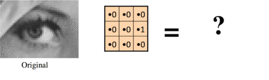
Một kernel nhỏ có thể tạo một phép biến đổi rất cụ thể: ở đây là dịch ảnh sang phải một pixel.
| Tuần | Chủ đề | Yêu cầu |
|---|---|---|
| 3 | Histogram, cân bằng và so khớp histogram | Bài tập gamma/contrast |
| 4 | Lọc ảnh trong miền không gian | Thực hành ở nhà |
| 5 | Thiết kế bộ lọc và tìm filters | Notebook MNIST convolution |
| 6 | Ứng dụng histogram, template matching | Bài tập giữa kỳ |
Bài này nối phần lọc cổ điển với ý tưởng filter learning trong mạng tích chập.
Sau buổi học, sinh viên có thể:
Không chỉ áp kernel.
Ta cần biết kernel có tính chất gì.
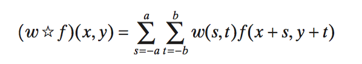
Không xoay kernel trước khi trượt.
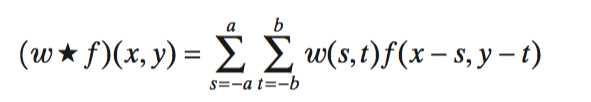
Tương đương xoay kernel \(180^\circ\) trước.
Với kernel đối xứng, hai phép cho cùng kết quả; với kernel định hướng, khác biệt sẽ thấy ngay.
Dùng ảnh chỉ có một điểm sáng ở tâm để kiểm tra phép đang giữ hay lật kernel.
Kernel gốc
| 1 | 2 | 3 |
| 4 | 5 | 6 |
| 7 | 8 | 9 |
Correlation
| 9 | 8 | 7 |
| 6 | 5 | 4 |
| 3 | 2 | 1 |
Convolution
| 1 | 2 | 3 |
| 4 | 5 | 6 |
| 7 | 8 | 9 |
Ví dụ này là bản rút gọn của hình Gonzalez trong slide gốc: đáp ứng xung cho biết kernel có bị lật hay không.
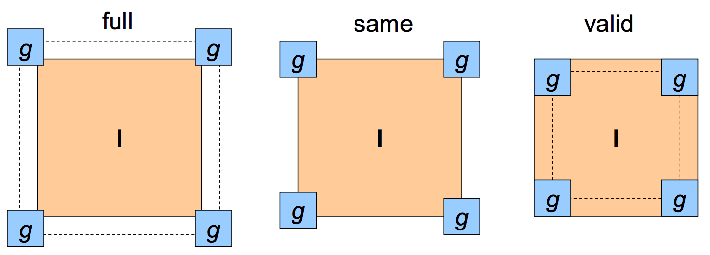
Với ảnh \(M\times N\) và kernel \(m\times n\): full cho \((M+m-1)\times(N+n-1)\), same giữ \(M\times N\), valid cho \((M-m+1)\times(N-n+1)\).
Phần ngoài ảnh là giá trị cố định, thường là 0.
Vượt ra một bên thì lấy từ bên đối diện.
Lặp lại điểm ảnh sát mép.
Phản chiếu ảnh qua biên.
Biên ảnh thường là nơi artefact xuất hiện đầu tiên, nhất là khi kernel lớn hoặc có hệ số âm.
Tuần 5 tập trung vào hai câu hỏi: tính nhanh hơn bằng tính chất nào, và thiết kế kernel để giữ hoặc làm nổi cấu trúc nào?
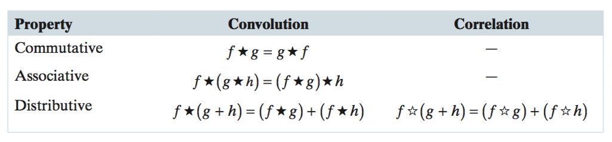
Nếu kernel 2D tách được thành hai kernel 1D, ta lọc theo hàng rồi theo cột thay vì lọc cả cửa sổ 2D một lần.
Mỗi điểm ảnh cần \(m\cdot n\) phép nhân.
Mỗi điểm ảnh cần khoảng \(m+n\) phép nhân.
Một hàm 2D \(G(x,y)\) là tách được (separable) nếu viết được thành tích của hai hàm 1D:
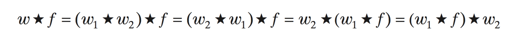
Nhờ tính kết hợp, convolution 2D với kernel tách được có thể đổi thành hai bước convolution 1D.
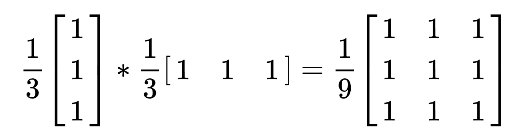
Một box \(3\times3\) có thể tính bằng trung bình dọc rồi trung bình ngang; kết quả giống kernel 2D nhưng ít phép nhân hơn.
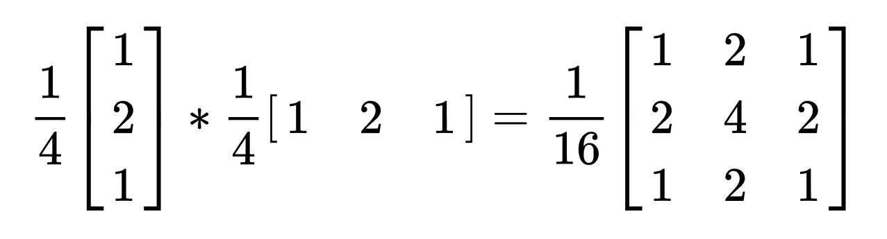
Gaussian là ví dụ quan trọng: lọc Gaussian lớn vẫn chạy nhanh nếu dùng hai bước 1D theo hai chiều.
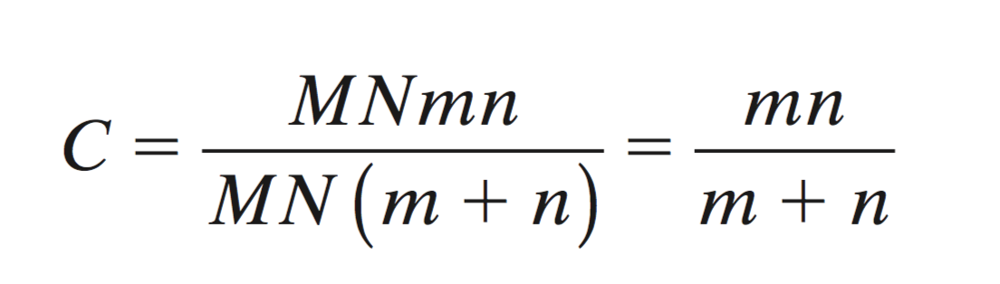
Muốn ảnh biến đổi ra sao?
Kernel phải mã hoá đúng phép biến đổi đó.
Kernel dịch phải một pixel chỉ cần lấy giá trị từ điểm ảnh bên trái của tâm.
Filter design bắt đầu bằng việc hỏi: điểm ảnh mới cần lấy thông tin từ đâu và cộng/trừ như thế nào?
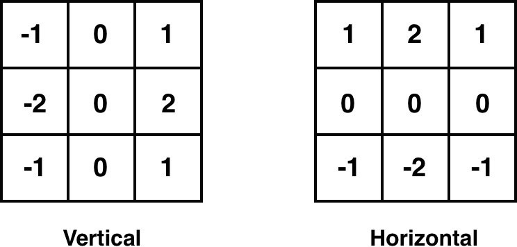
Hệ số dương và âm triệt tiêu vùng phẳng, nhưng tạo đáp ứng mạnh khi hai phía của kernel có cường độ khác nhau.
Các điểm gần nhau có giá trị gần giống nhau.
Tổng hệ số dương và âm gần triệt tiêu.
Một phía sáng, một phía tối.
Hiệu hai phía lớn nên đáp ứng nổi lên.
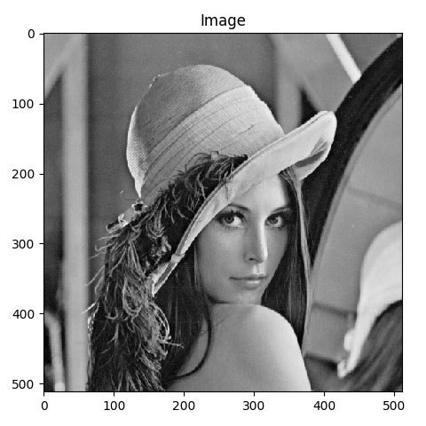
Ảnh gốc
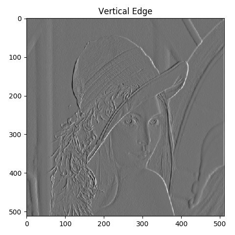
Biên dọc
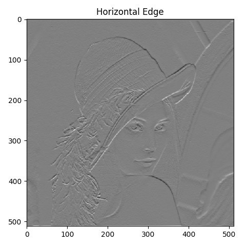
Biên ngang
Kernel có hướng khác nhau sẽ làm nổi các cấu trúc theo hướng khác nhau.
Slide gốc nhấn mạnh: DL tự học filter, nhưng không miễn phí về dữ liệu, thiết kế mô hình và huấn luyện.
Không phải mọi blur đều giống nhau.
Có blur phá biên, có blur cố giữ biên.
Trọng số phụ thuộc vào vị trí trong cửa sổ.
Nếu cửa sổ cắt qua biên, hai phía bị trộn vào nhau.
Làm mượt nhiễu trong từng vùng.
Giữ chênh lệch lớn tại biên.
Đây là động lực của nhóm edge-preserving smoothing filters trong slide gốc.
Làm mượt trong vùng đồng nhất, nhưng giảm trộn giữa hai phía có cường độ khác nhau.
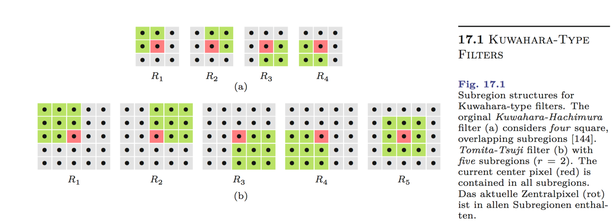
Ref: Burger & Burge, Edge-Preserving Smoothing Filters.
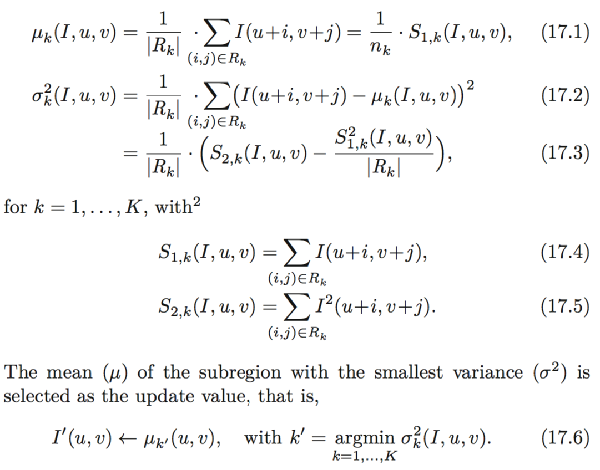
Với mỗi vùng con, tính trung bình \(\mu_i\) và phương sai \(\sigma_i^2\); đầu ra lấy \(\mu_k\) của vùng có \(\sigma_k^2\) nhỏ nhất.
Nhiễu trong vùng giảm, nhưng đường ranh giữa hai vùng vẫn còn sắc.
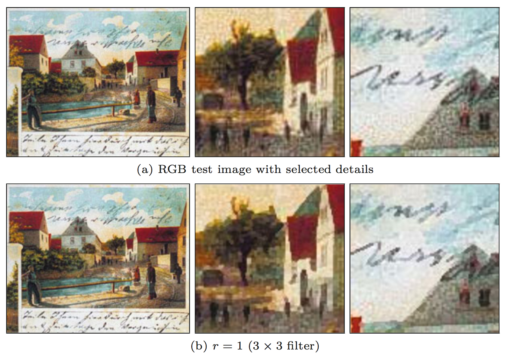
Kuwahara làm mượt vùng màu tương đối đồng nhất, nhưng các đường biên lớn trong chi tiết ảnh vẫn được giữ rõ hơn so với blur đều.
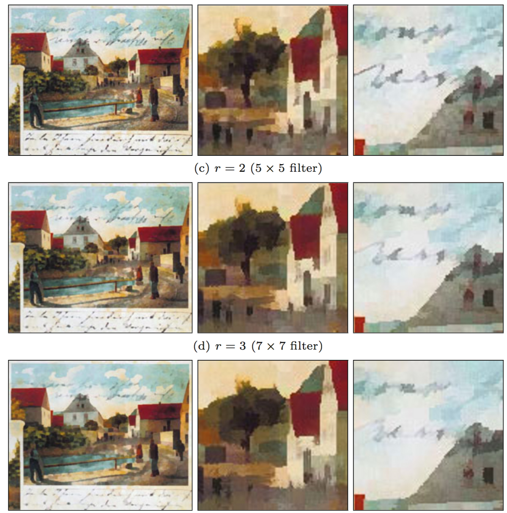
Cửa sổ lớn hơn làm mượt mạnh hơn nhưng cũng dễ tạo hiệu ứng mảng màu; đây là đánh đổi cần chọn khi thiết kế filter.
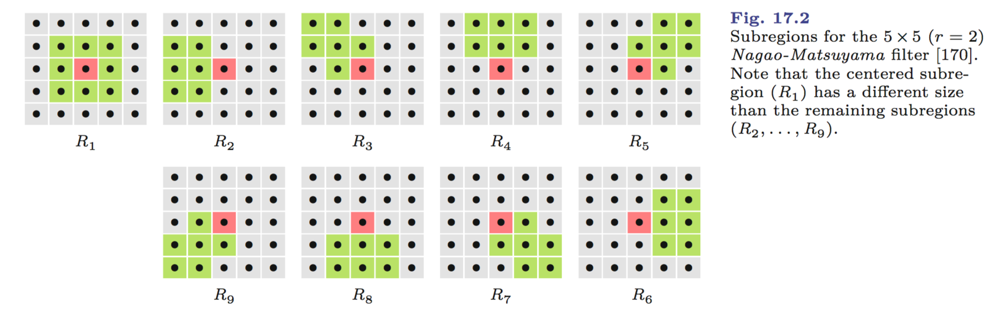
Nagao-Matsuyama mở rộng ý tưởng chọn vùng ổn định bằng nhiều vùng con có hình dạng khác nhau, giúp bám cấu trúc cạnh tốt hơn.
Trọng số chỉ phụ thuộc vào khoảng cách trong không gian ảnh.
Tạo hiệu ứng không gian: blur hoặc sharpen.
Trọng số phụ thuộc vào độ khác nhau của giá trị pixel.
Hoạt động gần với phép toán điểm hơn.
Bilateral filter kết hợp cả hai: gần trong ảnh và giống về cường độ thì mới ảnh hưởng mạnh.
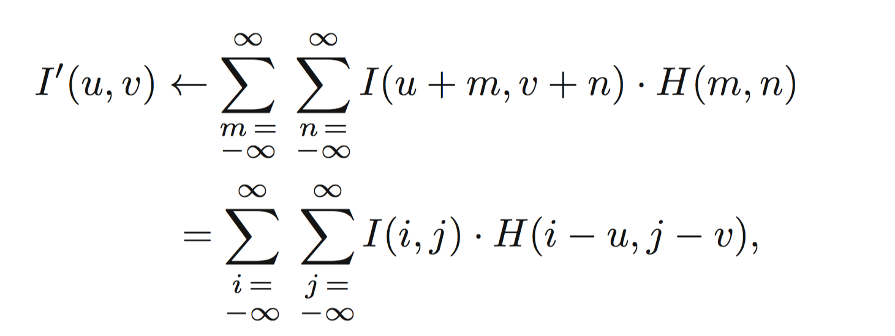
Domain filter nhìn khoảng cách không gian: điểm gần tâm thường có trọng số lớn hơn điểm xa tâm.
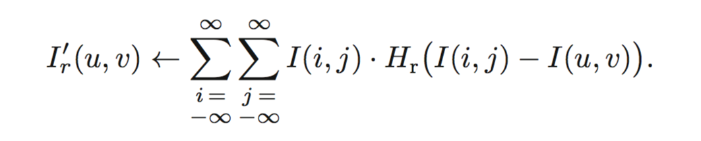
Range filter nhìn chênh lệch giá trị: pixel khác cường độ quá xa sẽ ít ảnh hưởng dù ở gần trong không gian.
Điểm ở gần tâm có cơ hội ảnh hưởng mạnh hơn.
Điểm khác màu/cường độ nhiều bị giảm trọng số.
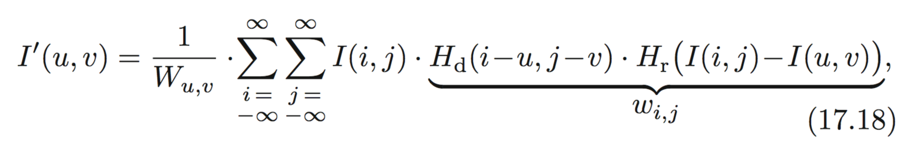
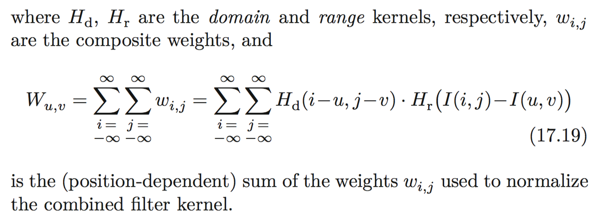
Trọng số là tích của domain kernel \(H_d\) và range kernel \(H_r\), rồi được chuẩn hóa theo tổng trọng số tại vị trí đang xét.
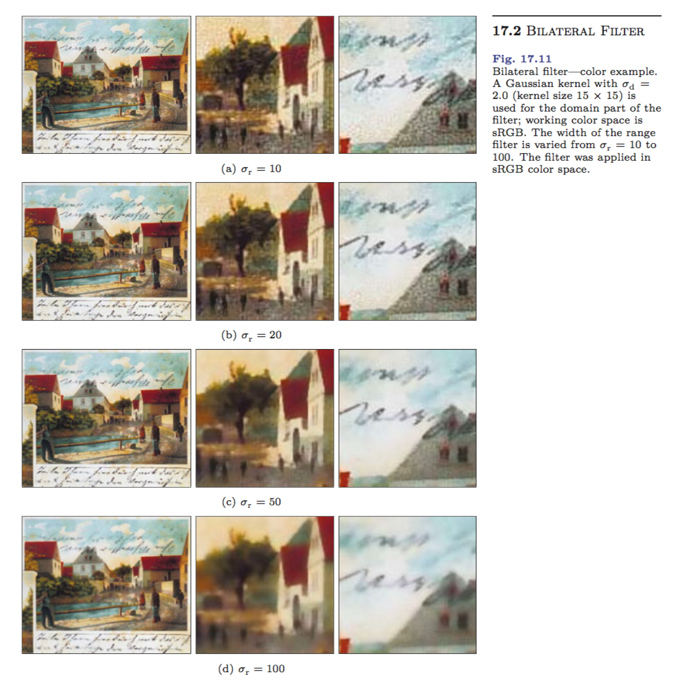
Các bộ lọc giữ biên thường tạo ảnh mượt ở vùng phẳng nhưng vẫn giữ các đường ranh lớn trong cảnh.
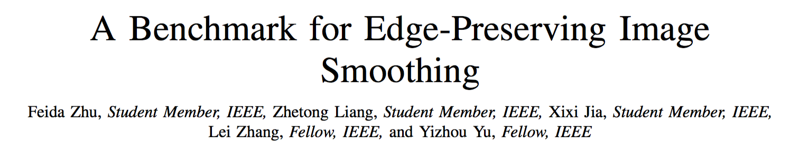
Không phải filter nào cũng viết tay.
CNN học kernel từ dữ liệu.
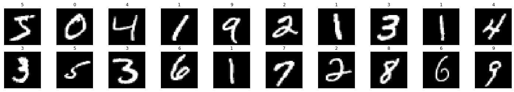
Notebook week 5 dùng ảnh chữ số \(28\times28\) để huấn luyện một mạng tích chập nhỏ.
class Net(nn.Module):
def __init__(self):
super(Net, self).__init__()
self.conv1 = nn.Conv2d(1, 10, kernel_size=3)
self.conv2 = nn.Conv2d(10, 20, kernel_size=5)
self.conv2_drop = nn.Dropout2d()
self.fc1 = nn.Linear(320, 50)
self.fc2 = nn.Linear(50, 10)
def forward(self, x):
x = F.relu(F.max_pool2d(self.conv1(x), 2))
x = F.relu(F.max_pool2d(self.conv2_drop(self.conv2(x)), 2))
x = x.view(-1, 320)
x = F.relu(self.fc1(x))
x = F.dropout(x, training=self.training)
x = self.fc2(x)
return F.log_softmax(x, dim=1)Hai lớp Conv2d chứa các kernel được cập nhật trong quá trình huấn luyện.
Shape: [10, 1, 3, 3]
10 filter, mỗi filter nhìn 1 kênh đầu vào.
Shape: [20, 10, 5, 5]
20 filter, mỗi filter nhìn 10 feature maps từ lớp trước.
Filter trong CNN không còn là ma trận 2D đơn giản; nó có cả chiều kênh đầu vào và số kênh đầu ra.
sd = model.state_dict()
conv1_layer = sd["conv1.weight"]
print(conv1_layer.shape) # torch.Size([10, 1, 3, 3])
filters = np.squeeze(conv1_layer.numpy())
f1 = filters[0]
print(f1)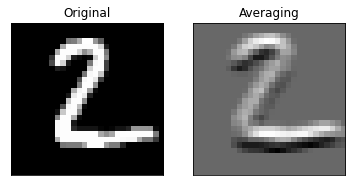
Notebook dùng cv2.filter2D để áp một kernel học được lên ảnh số 2; đáp ứng cho thấy filter nhạy với cấu trúc nét cụ thể.
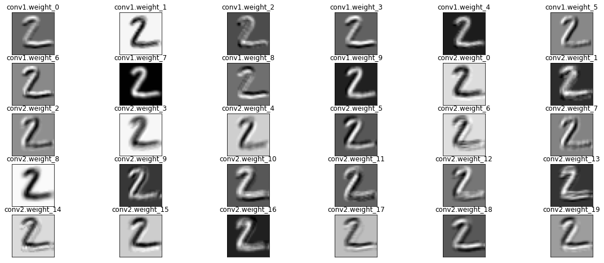
Một ảnh đầu vào tạo nhiều feature maps: mỗi filter làm nổi một kiểu nét, góc, vùng sáng hoặc tương phản khác nhau.
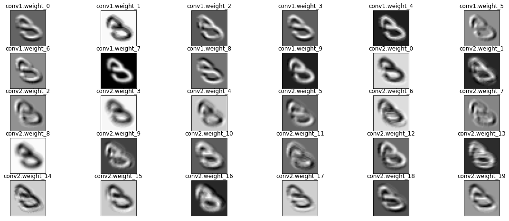
Cùng một bộ filter có thể áp lên ảnh khác; các đáp ứng kết hợp lại thành đặc trưng cho bộ phân loại phía sau.
for data, target in train_loader:
optimizer.zero_grad()
output = model(data)
loss = criterion(output, target)
loss.backward()
optimizer.step()CNN học filter tự động, nhưng con người vẫn chọn dữ liệu, kiến trúc, loss, optimizer, regularization và cách đánh giá.
Đây là lý do slide gốc ghi: Automatic learning đi kèm a lot of engineering skills.